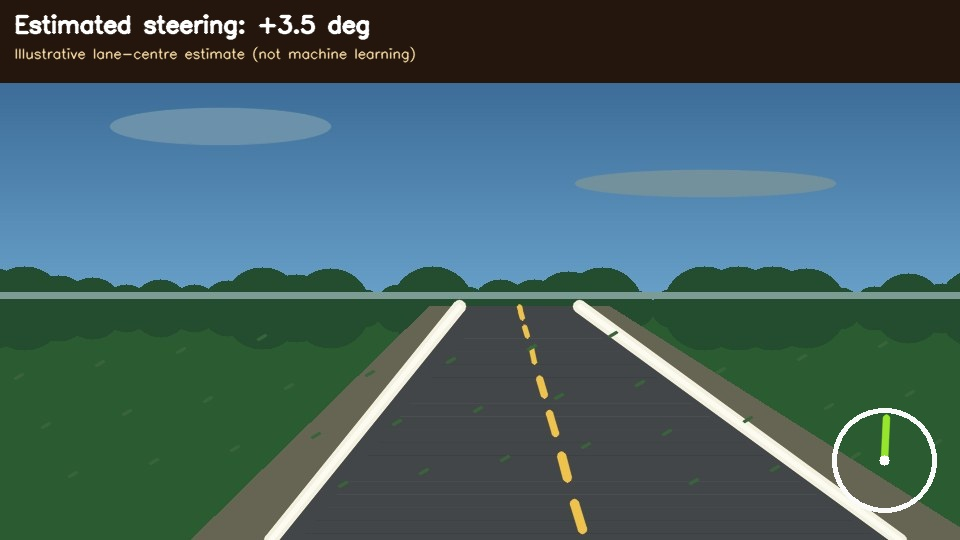

INTERACTIVE AUTONOMOUS-DRIVING LAB 100% BROWSER BASED
Watch the car drive.
See every decision.
Experience a moving-car simulation, steer it yourself, and inspect the steering predictions from an independently built computer-vision pipeline.
Animated simulationReal-time steeringNo installation needed
0:00 / 0:08
COMPUTER VISION DEMO
From camera frames
to steering angles.
The companion Python pipeline processes road images and produces a steering estimate. The eight-second replay shows 160 actual processed frames from synthetic test footage, with no prewritten steering sequence.

Live browser simulation
An original Canvas animation with a moving road, an illustrated vehicle, selectable tracks and manual steering.
Computer-vision pipeline
OpenCV lane-geometry baseline plus a separate PyTorch/ONNX training and inference pipeline.
Built from scratch
Standalone source and publishing structure for your GitHub repository, without forking the reference project.